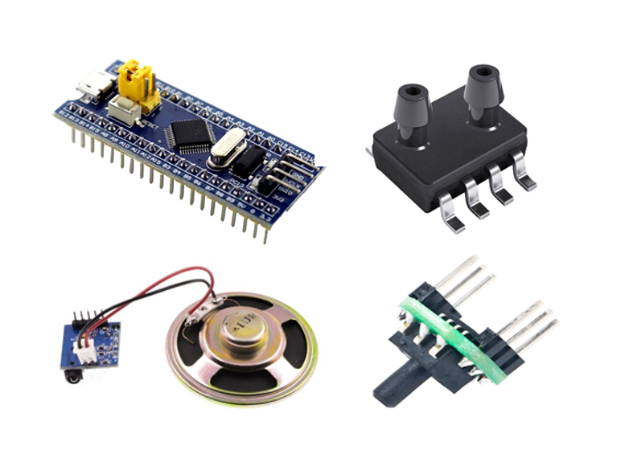
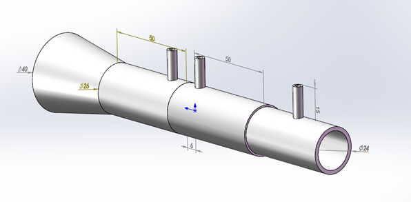
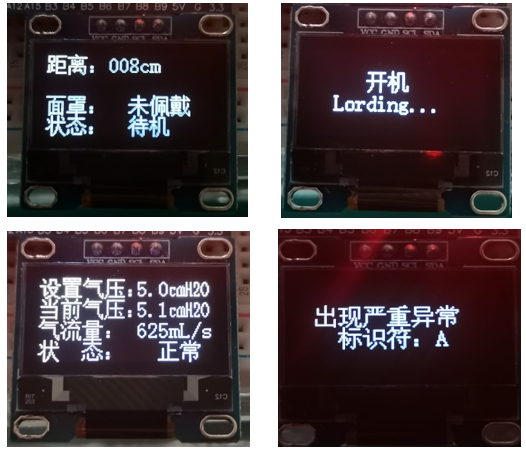

Ventilator based on STM32 Microcontroller
  
Project Source
This project is the graduation project of Xingke Yang's college career, supervised by Associate Professor Yanrong Zhang . The functional requirements of the project were determined by their joint deliberation.
Project Description
This project designed the control system for the ventilator, including system hardware selection, circuit design, sensor selection, airflow control device selection, airway design, and control algorithm program development. Ventilator system functions include tasks such as intelligent switching, button speed regulation, data acquisition, air pressure regulation, and error alarms.
Project Work Structure
■Hardware Selection■Ventilator Air Channel Design
■Ventilator Control Algorithm Programming
- Utilized the ultrasonic sensor to measure the distance and programmed and packaged the module to ensure the normal operation of the ultrasonic sensor and improve the measurement accuracy.
- Determined the smart start by the power-on button, voice prompts and the distance measured by the ultrasonic sensor when the system was reset and powered on.
- Utilized timer to generate a 1KHz PWM wave to control the speed of the DC motor and set the pulse width resolution to 1%.
- Obtained the airway pressure measurement value, displayed, and controlled the data.
- Utilized the PI controller in the incremental PID controller algorithm to adjust the speed of the DC brushless motor to achieve the effect of rapid adjustment and a simplified algorithm.
- Employed the PI controller to calculate the PWM wave parameters and controlled the speed of the fan to make the ventilator output a stable desired pressure.
- Obtained and pre-stored the corresponding codes of the characters in the array to facilitate the reading of data during display.
- Obtained the airway airflow measurement value and displayed the data.
- Set the first-class alarm and the second-class alarm to ensure the safe operation of the ventilator.
Project Result
- When the mask is moved so that the measurement distance is less than 5cm, the voice module of the ventilator prompts to power on, and the initial boot loading interface is performed. After loading for about 2 seconds, the ventilator works normally.
- The air pressure adjustment and display, the alarm function and the functions and indicators of various sensors all meet the normal requirements.
- The stability of the system's air pressure output fluctuates well, and the air pressure fluctuation error of this system is twice as short as that of the traditional ventilator.